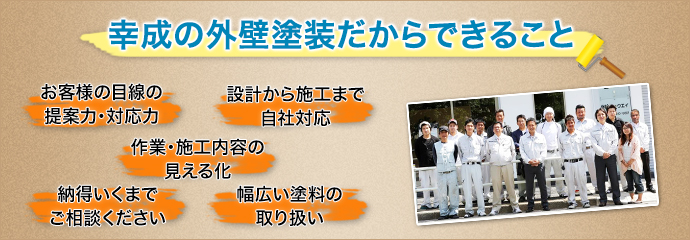

幸成の外壁塗装が選ばれる理由
西東京を中心に、東京や埼玉、神奈川、千葉で外壁塗装を承っている株式会社 幸成は、これまで数多くのお客様からご満足の声をいただいて参りました。これからもスタッフ一同研鑽を重ね、サービスの向上に努めて参ります。
幸成の外壁塗装だからできること

お客様の目線に立った提案力・対応力

外壁塗装は職人のイメージが強く、「説明がおおざっぱ」「どんぶり勘定」「相談しにくい」といった印象を持っている方も多いようです。私たち幸成は、そういった理由で外壁塗装業者に距離感を持っていらっしゃるお客様にも親しんでいただけるよう、わかりやすさ・親しみやすさとコミュニケーションの密度を大切にしています。
建物診査や塗装工事の報告書は写真付きで細かく・わかりやすく作成し、専門用語についてもしっかりご説明します。お見積もりに関しても、曖昧さの一切ない詳細・明瞭な見積もり書をお出しします。お客様にきちんとご納得いただき、気持ちよく塗装工事を進めるために、お客様目線に立ったご提案をいたしますので、どんなことでもお気軽にご相談ください。
設計から施工まで自社対応

当社は防水工事専門店からスタートし、防水に深く関わる外壁塗装の分野にも業務を広げ、数多くの実績と経験、知識を蓄積して参りました。経験豊富な人材が自社に揃っていますので、工事の丸投げを一切しない安心の自社設計・自社施工が可能です。
自社一貫で対応するので、お客様のご要望を社内のスタッフ間でしっかり共有し、コミュニケーションのズレなく施工を行うことが可能です。打ち合わせの段階から職人が参席し、直接お話をうかがえるケースもございます。また、余計な外注にかかる中間マージンが発生しないため、適正価格でのサービス提供も実現できています。
作業・施工内容の見える化

営業スタッフや職人のサービス品質を把握し、常に向上させていけるよう、スタッフには毎日の作業日報作成が義務づけられています。スタッフの業務内容を会社全体できちんと管理することで、お客様に安心してご利用いただけるサービス体制が築けるのだと考えています。施工完了後には、お客様にもより整った形での報告書をご提出します。
納得いくまでご相談いただけるサービス

お住まいの外壁や屋根の状態の調査は、無料にて承ります。住まいを長持ちさせるためには、外壁や屋根の「健康診断」は欠かせません。無理に塗装をおすすめするような営業は行いませんので、お気軽にご相談いただければと思います。また、塗装のカラーリングについては「カラーシミュレーション）」でとことんご相談いただけます。塗料選びについても丁寧にサポートしますので、お気軽にご質問ください。
幅広い塗料の取り扱い
シリコン系塗料やフッ素系塗料、光触媒塗料など、基本的に対応できない塗料はございません。どのような塗料でもお取り扱い可能ですので、ご希望がございましたらお気兼ねなくお申し付けください。オーストラリアで生まれた高性能塗料「アステック」は、いま特におすすめしている塗料です。性能が高いぶん塗装に技術が要求されますが、当社は数多くの施工実績がございますので、安心してお任せいただけます。